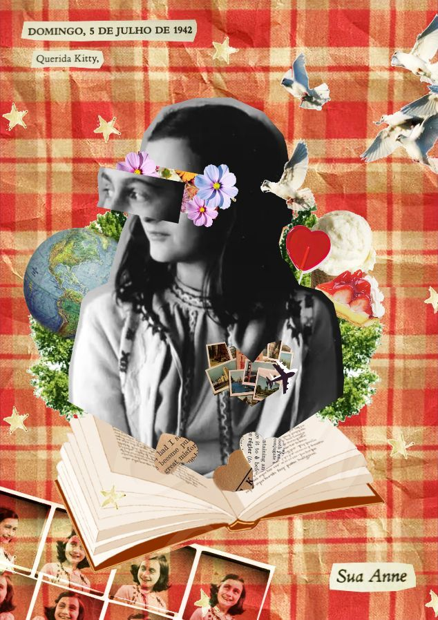

Anne se apaixonou por Peter.

Peter e Anne viveram no Anexo durante os dois anos que se passava a 2° guerra mundial, Peter era filho de um dos casais que moravam no Anexo.
Sonhava em ser uma jornalista de sucesso.
Em seu livro Anne relata o seu desejo de se tornar uma jornalista famosa, ela também queria se tornar uma escritora dedicada, Anne escreveu livros os quais cita em seu diário.
Anne chamava o seu diário de Kitty.
Anne chamava seu diário sempre de Kitty, o seu diário se tornou uma espécie de melhor amiga, já que no anexo Anne se sentia sozinha, então quando escrevia para Kitty expressava as suas emoções e como conseguia suportar tudo sendo apenas uma adolescente de 13 anos tentando sobreviver em meio a Guerra.